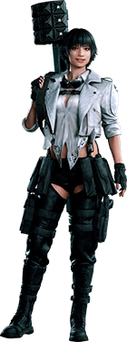
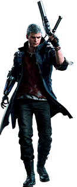
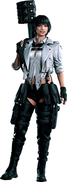
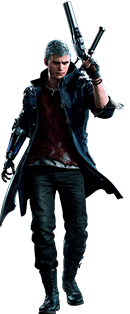

Seus Personagens
Em Devil may Cry tem varios personagens muito legais como o proprio Dante e o seu irmão Vergil q é um filho duma puta que só quer poder,alem disso Vergil tem um filho chamado Nero que o seu braço é um braço de demonio.E tambem tem a Lady...GOSTO-.
Em Devil May Cry existe varias armas disponiveis no jogo cada uma com sua individualidade e peculiaridade

 



Armas Demoniacas
Melhores Armas Demoniacas